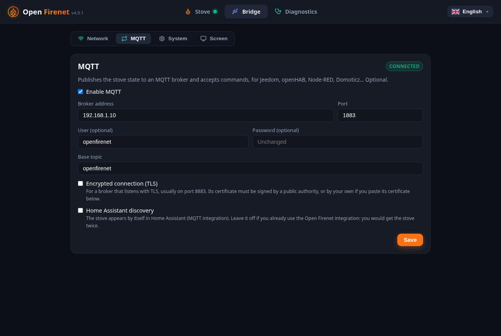

MQTT
Der Stick kann den Zustand des Ofens an Ihren MQTT-Broker senden und Steuerbefehle empfangen. Dies ist die Schnittstelle für Hausautomationssysteme abseits von Home Assistant: Jeedom, openHAB, Node-RED, Domoticz und alle MQTT-Clients.
MQTT ist optional und standardmäßig deaktiviert. Es erfordert Stick-Firmware 3.3 oder neuer sowie einen Broker in Ihrem Netzwerk (beispielsweise Mosquitto). Für Home Assistant bleibt die Integration die vollständigste Lösung; die MQTT-Erkennung ist die Alternative, für die nichts installiert werden muss.
Einrichtung
- Öffnen Sie die Webseite des Sticks und wechseln Sie in den Reiter Stick (
http://open-firenet.local/#bridge) und dort in den Bereich MQTT. - Geben Sie Broker-Adresse und Port (standardmäßig 1883) ein, sowie Benutzername und Passwort, falls Ihr Broker danach fragt.
- Aktivieren Sie MQTT aktivieren und speichern Sie. Der Status wechselt innerhalb weniger Sekunden auf „Verbunden“.

Was der Stick sendet
Alle Topics beginnen mit einem Basis-Topic, standardmäßig openfirenet. Ändern Sie dieses in den Einstellungen, wenn Sie mehrere Sticks betreiben.
| Topic | Inhalt |
|---|---|
openfirenet/availability | online oder offline. Der Broker setzt diesen Wert selbstständig auf offline, sobald der Stick nicht mehr erreichbar ist. |
openfirenet/state | Eine JSON-Nachricht mit den Objekten device, stove, sensors und controls, mit denselben Bezeichnungen und Einheiten wie in der REST-API. Wird bei jeder Änderung gesendet, maximal alle 5 Sekunden und mindestens einmal pro Minute. |
openfirenet/<section>/<name> | Dieselben Werte einzeln pro Topic für Systeme, die einfache Werte bevorzugen: openfirenet/sensors/room_temperature, openfirenet/stove/state, openfirenet/controls/on... |
Alles wird mit gesetztem Retain-Flag gesendet, sodass ein Client unmittelbar nach dem Abonnieren die aktuellen Werte erhält. openfirenet/device/connected gibt an, ob der Stick mit dem Ofen verbunden ist; solange dies nicht der Fall ist, werden nur die Werte für device und health veröffentlicht.
Seit Firmware 3.7 liefert openfirenet/health/<name> den Betriebszustand des Sticks selbst: restart_reason (Ursache des letzten Neustarts), min_free_heap, chip_temperature, wifi_disconnects, stove_detections, stove_link_losses und mqtt_disconnects. Die Zähler starten bei jedem Start bei null. Ein Alarm bei stove_link_losses oder bei einer Änderung von restart_reason informiert Sie, wenn etwas schiefgegangen ist.
Befehle senden
| Topic | Nutzlast |
|---|---|
openfirenet/set/on | true / false, oder ON / OFF |
openfirenet/set/mode | manual, auto oder comfort |
openfirenet/set/power_percent | 30 bis 100 |
openfirenet/set/target_temperature | 14 bis 28, in ganzen Graden |
openfirenet/set | Mehrere Einstellungen auf einmal im JSON-Format: {"mode": "comfort", "target_temperature": 21} |
Die übrigen Einstellungen der REST-API (Frostschutz, MultiAir-Gebläse, Zeitplan...) werden auf die gleiche Weise unter den gleichen Namen akzeptiert.
# 21 °C mit dem Mosquitto-Befehlszeilen-Client senden
mosquitto_pub -h 192.168.1.10 -u meinuser -P meinpasswort \
-t openfirenet/set/target_temperature -m 21
# Alle Meldungen des Sticks beobachten
mosquitto_sub -h 192.168.1.10 -u meinuser -P meinpasswort -t 'openfirenet/#' -vVeröffentlichen Sie Befehle nicht mit gesetztem Retain-Flag. Der Broker würde sie bei jeder Neuverbindung erneut senden und könnte den Ofen eigenständig einschalten; aus diesem Grund ignoriert der Stick solche Befehle. Befehle werden zudem ignoriert, solange der Ofen nicht verbunden ist.
Home-Assistant-Erkennung
Seit Firmware 3.4 kann der Stick den Ofen auch der MQTT-Integration von Home Assistant ankündigen: Aktivieren Sie Home-Assistant-Erkennung in der MQTT-Karte und speichern Sie. Der Ofen erscheint daraufhin automatisch in Home Assistant als ein Gerät mit:
- einem Thermostat: Ein / Aus, Zieltemperatur und die Betriebsmodi manuell / auto / Komfort als Voreinstellungen;
- der Heizleistung, der Absenk- und Frostschutztemperatur sowie der Raumfühler-Kalibrierung;
- Schaltern für Zeitplan, Frostschutz und Eco-Modus;
- den Sensoren: Temperaturen, verbrauchte Pellets, Service-Countdown, Status sowie Fehler- und Warncodes.
Home Assistant muss seine MQTT-Integration mit demselben Broker verbunden haben. Wird die Option deaktiviert, werden die Entitäten wieder entfernt.
Verwenden Sie nur eine der beiden Methoden. Wenn Sie bereits die Open-Firenet-Integration nutzen, lassen Sie die Erkennung deaktiviert: Der Ofen wäre sonst doppelt vorhanden. Die Integration bleibt die umfassendste Lösung: Sie enthält zusätzlich die MultiAir-Gebläse, den Wochenplan (kopiert von einem Home-Assistant-Zeitplan) und den Außentemperaturfühler. Über MQTT können die Zeitfenster zwar geschrieben, aber nicht ausgelesen werden.
Verschlüsselte Verbindung (TLS)
Seit Firmware 3.5 kann der Stick einen Broker erreichen, der TLS nutzt (üblicherweise auf Port 8883): Aktivieren Sie Verschlüsselte Verbindung (TLS) in der MQTT-Karte. Der Stick überprüft das Zertifikat des Brokers auf eine von zwei Arten:
- Keine weiteren Eingaben erforderlich, wenn das Zertifikat von einer öffentlichen Zertifizierungsstelle für den als Broker-Adresse eingetragenen Namen signiert ist: ein gehosteter Broker oder ein Broker im Heimnetz mit Let's-Encrypt-Zertifikat.
- Fügen Sie das Zertifikat Ihrer eigenen Zertifizierungsstelle in das erscheinende Feld ein, wenn es sich um einen lokalen Broker mit selbstsigniertem Zertifikat handelt. Es handelt sich um den Text, der mit
-----BEGIN CERTIFICATE-----beginnt. Der Name im Broker-Zertifikat wird dann nicht überprüft, da ein solcher Broker üblicherweise über seine IP-Adresse aufgerufen wird.
Nur wenn nötig. Verschlüsselung ist anspruchsvoll für diesen kleinen Chip: Sie belegt bei bestehender Verbindung etwa 50 kB Arbeitsspeicher. Bei einem Broker im eigenen Netzwerk bleibt unverschlüsseltes MQTT die einfachste Wahl. Verwenden Sie TLS, wenn der Broker es erfordert oder sich außerhalb Ihres Netzwerks befindet.
Gut zu wissen
- Ohne TLS ist die Verbindung unverschlüsselt: Für einen Broker im lokalen Netzwerk völlig ausreichend, darüber hinaus jedoch nicht.
- Ist der Broker nicht erreichbar, versucht der Stick die Verbindung selbstständig alle 10 Sekunden erneut (alle 30 Sekunden mit TLS). Die Verbindung zum Ofen bleibt davon unberührt.
Funktioniert etwas nicht? Siehe Fehlerbehebung.